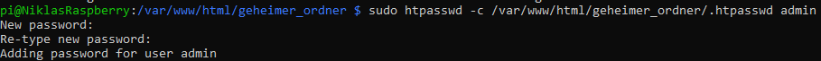

2. IP-Adresse des Raspberry Pi herausfinden
Führe auf dem Raspberry Pi folgenden Befehl aus, um die IP-Adresse im Netzwerk zu ermitteln:
ifconfigSuche die Adresse unter wlan0 (für WLAN) oder eth0 (für LAN). Beispiel: 192.168.1.100.

Diese Anleitung erklärt, wie du eine Webseite auf deinem Raspberry Pi verfügbar machst und einen Ordner mit .htaccess schützt.
Stelle sicher, dass dein Raspberry Pi mit deinem Heimnetzwerk verbunden ist und Apache installiert ist:
sudo apt update
sudo apt install apache2Führe auf dem Raspberry Pi folgenden Befehl aus, um die IP-Adresse im Netzwerk zu ermitteln:
ifconfigSuche die Adresse unter wlan0 (für WLAN) oder eth0 (für LAN). Beispiel: 192.168.1.100.
Der Standard-Webserver-Ordner ist /var/www/html. Kopiere deine HTML-Dateien dorthin:
sudo cp /pfad/zu/deiner_datei.html /var/www/html/index.htmlDie Datei index.html wird automatisch geladen, wenn du den Webserver aufrufst.
Starte den Apache-Webserver, falls er nicht läuft:
sudo systemctl start apache2Optional: Apache beim Booten starten:
sudo systemctl enable apache2Öffne einen Browser auf einem anderen Gerät im selben Netzwerk und gib die IP-Adresse des Raspberry Pi ein:
http://192.168.1.100(Ersetze 192.168.1.100 mit der IP-Adresse deines Raspberry Pi.)
Es sollte die html Datei des Apache-Servers zu sehen sein
.png)
Öffne die Apache-Konfiguration:
sudo nano /etc/apache2/apache2.conf
Suche den Abschnitt
Starte Apache neu:
sudo systemctl restart apache2
Erstelle eine .htaccess-Datei im Ordner, den du schützen möchtest (z. B. geheimer_ordner):
sudo nano /var/www/html/geheimer_ordner/.htaccessFüge folgenden Inhalt ein:
AuthType Basic
AuthName "Geschützter Bereich"
AuthUserFile /var/www/html/geheimer_ordner/.htpasswd
Require valid-userErstelle die Datei .htpasswd mit Benutzername und Passwort:
sudo htpasswd -c /var/www/html/geheimer_ordner/.htpasswd adminErsetze admin mit dem gewünschten Benutzernamen.
Anschließend erfolgt die Passwort vergabe:
Starte den Apache-Server neu, damit die Änderungen wirksam werden:
sudo systemctl restart apache2Öffne den Browser und rufe den geschützten Ordner auf, z. B.:
http://192.168.1.100/geheimer_ordnerGib den Benutzernamen und das Passwort ein, um Zugriff zu erhalten.
Auf einem Desktop-PC würde das so aussehen:
.png)
Wenn alles geklappt hat sieht das so aus:
.png)
Herzlichen Glückwunsch! Dein Raspberry Pi-Webserver ist jetzt einsatzbereit.